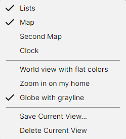

Named Views
A named view saves the state of the whole program under a name, so you can return to it with one click: a "Europe" view for one task and a "World, two maps" view for another. A view holds:
- whether the Amateur Radio functions are on;
- which panels are shown, and the window layout;
- for each map shown: its projection, its centre and zoom, and every checkbox of its Layers, Lines, Labels, Amateur Radio and Ionosphere menus.
Saving a View
Set the program up as you want it, then pick View > Save Current View... and type a name. Each view must have a name of its own.
Switching Views
The saved views are listed in the View menu, below the panel checkboxes. Pick one to restore it. The view you picked last is ticked in the menu for as long as the program still shows it unchanged; a pan, a zoom or a changed checkbox clears the tick. The sizes and positions of the panels are not compared.

Deleting a View
Pick the view to make it current, then View > Delete Current View. The item is disabled while no view is ticked.